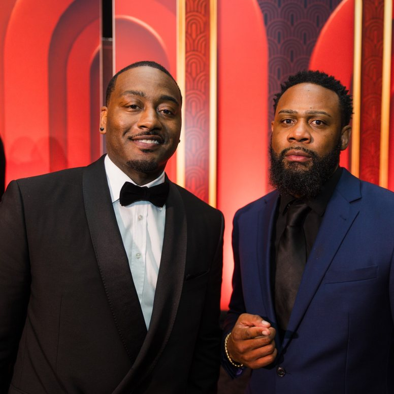
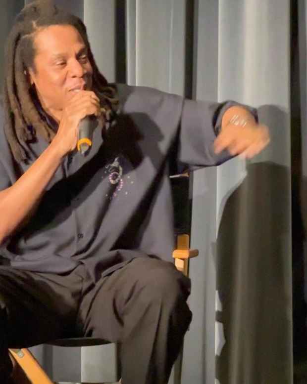
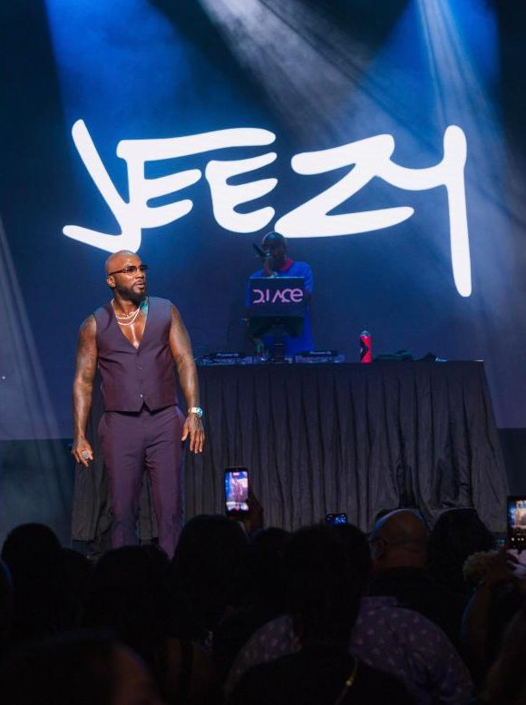
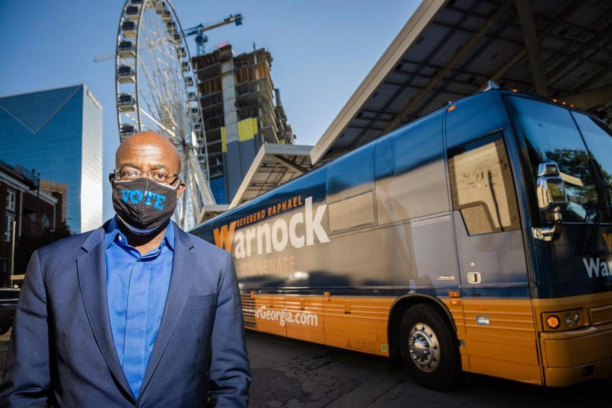
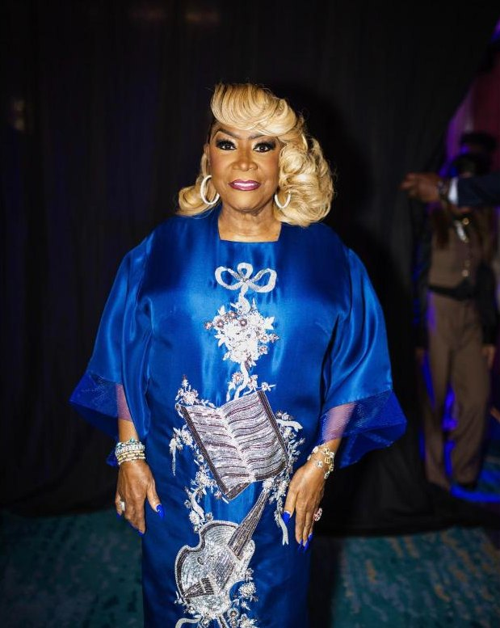
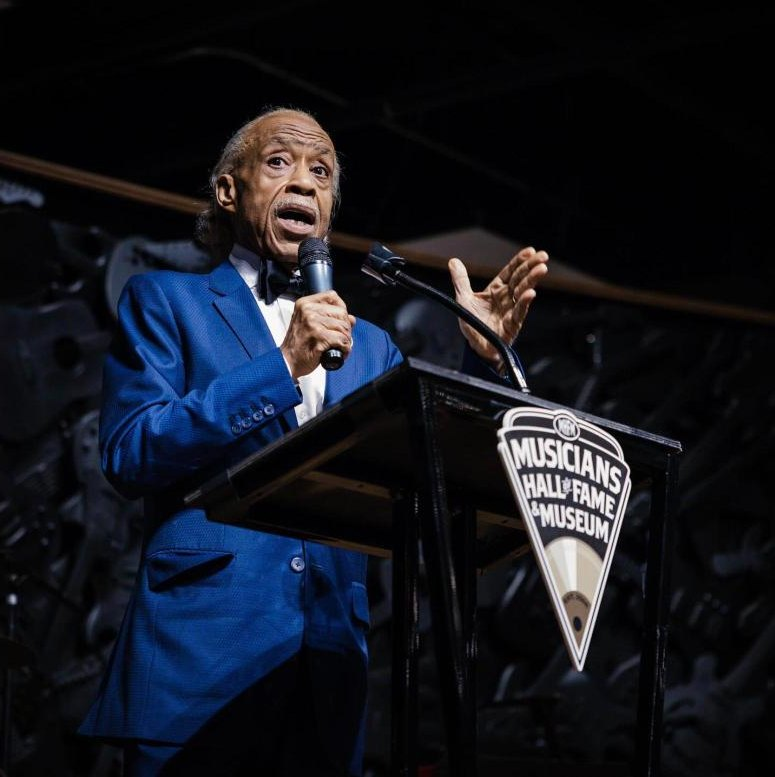
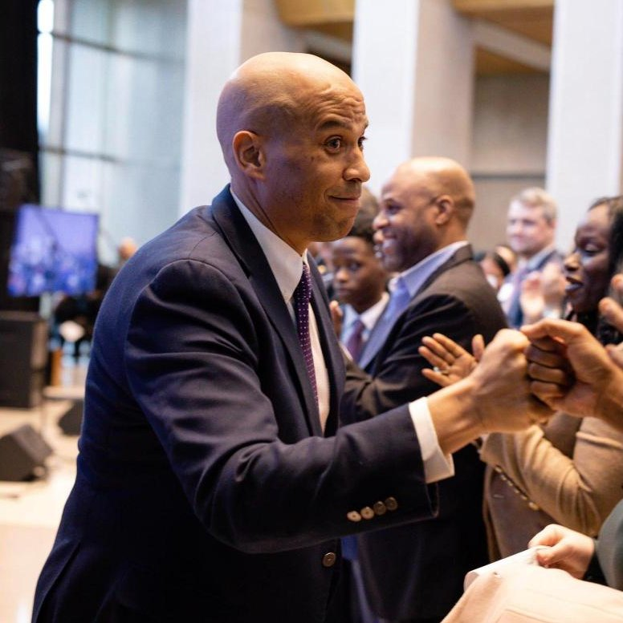
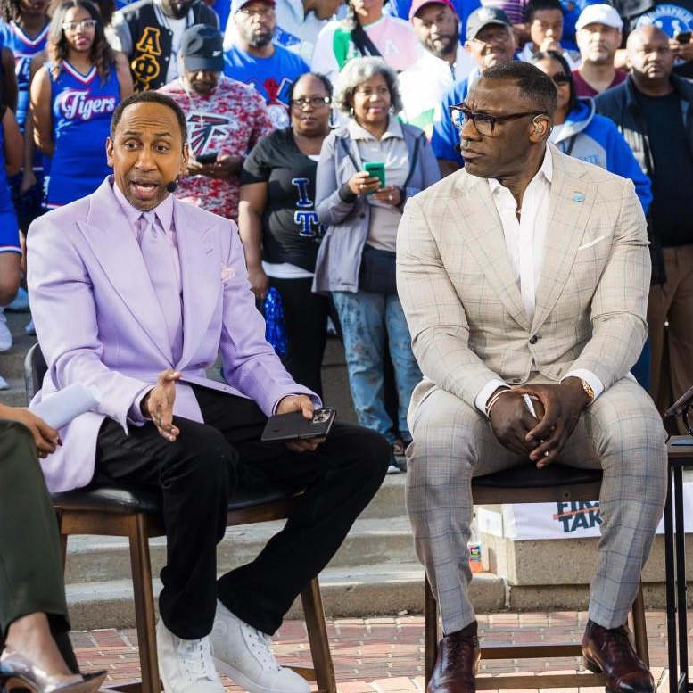
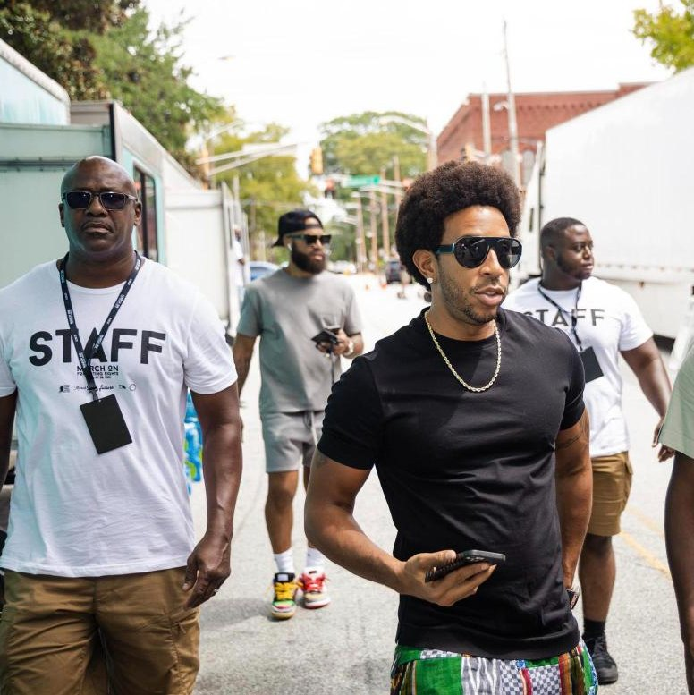

Nashville conferencephotographer. Every room, every name.
Conferences live or die on proof: proof for sponsors, for next year's registrations and for the speakers you want back. Leo Operations photographs conferences and conventions across Nashville, from Music City Center to the downtown hotel ballrooms, and delivers images your team can use the same day.
What we photograph at a conference
Keynotes from three angles, panels with every speaker sharp, breakout rooms full of people taking notes, the expo floor with sponsor logos readable, networking receptions, award presentations, VIP and board photos, and the wide shots of the room that show how big the event really was. We work from your agenda and a written shot list, so the sponsor who paid for the lunch gets photographed at the lunch.
Same-day images for social and press
We cull and edit as the day goes. Your communications team gets a first set of edited images during the event to post while people are still talking about it, and the full color-corrected gallery follows in a private online gallery, ready to download and share.
Names, captions and sponsors
We shoot like a newsroom. Our founder publishes Washington DC Magazine and has photographed more than 1,000 events, so names get captured, honorees are photographed with the people who matter to them, and sponsor signage is in the frame on purpose.
Photo, video and design together
The same team shoots 4K video, runs headshot lounges and designs programs and signage. Book one or all of it. Either way you get one producer and one invoice.
Everythingyou need.
In theroom.









Questions, answered.
How much does a conference photographer cost in Nashville?
It depends on hours, the number of rooms running at once and how fast you need images. Email your agenda and dates and we will quote it in writing within one business day.
How many photographers do we need for a conference?
Plan one photographer for every room that must be covered at the same time, plus a floater on large expo floors. We build the crew from your agenda.
Can we get photos during the event?
Yes. We deliver edited selects during the event for social media and press, then the full gallery afterward.
Do you cover Music City Center and hotel conferences?
Yes. We cover conferences at Music City Center, the downtown convention hotels, Gaylord Opryland, universities and corporate campuses across Middle Tennessee.
Can you also film the conference?
Yes. We shoot session recordings, a highlight reel and vertical clips with the same crew.
How do we book?
Email us or call (773) 573-2135 with your dates, venue and agenda.
Let’s make itunforgettable.
Tell us the date, the place and what you need. We will tell you how we would cover it.
Email Leo Operations →